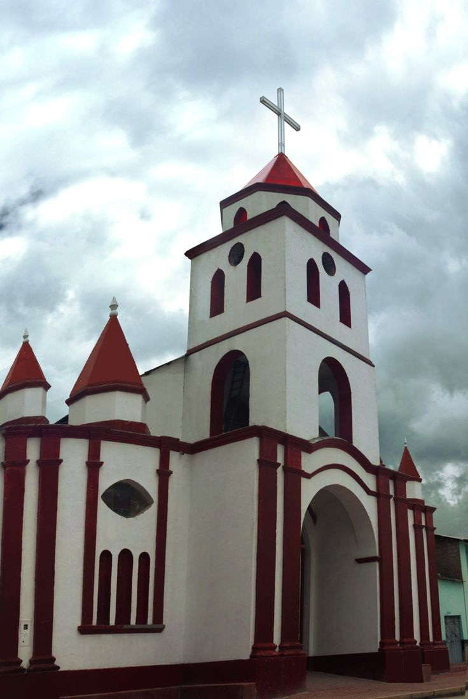
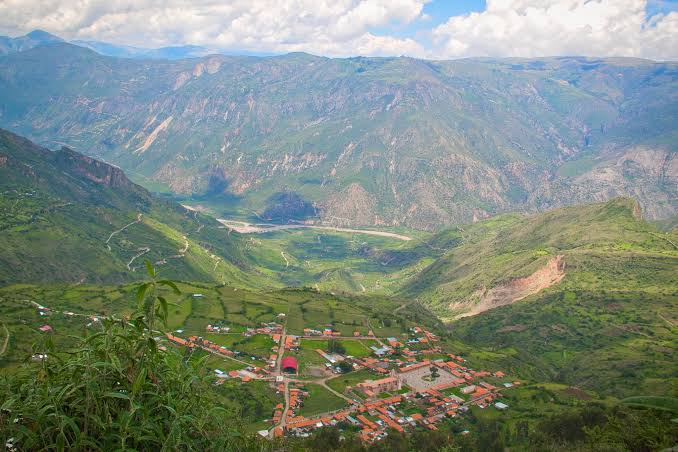

Plaza Mayor de Puquio
Un punto de encuentro para observar la vida de la ciudad y reconocer parte de su memoria cultural.
Conoce la ciudad, sus espacios emblemáticos, sus templos y los paisajes que forman parte de la identidad de Lucanas.
Una selección inicial de lugares y temas para inspirar tu recorrido. Verifica accesos y horarios localmente antes de visitar.
Un punto de encuentro para observar la vida de la ciudad y reconocer parte de su memoria cultural.

Arquitectura religiosa y tradición local en uno de los espacios representativos de la ciudad.

Un acercamiento al patrimonio religioso y a la identidad de los barrios tradicionales.

El entorno montañoso ofrece postales de altura y oportunidades para disfrutar la naturaleza con respeto.
Las fiestas, la música y las costumbres completan la experiencia de conocer Puquio.
Explorar experiencias ↗